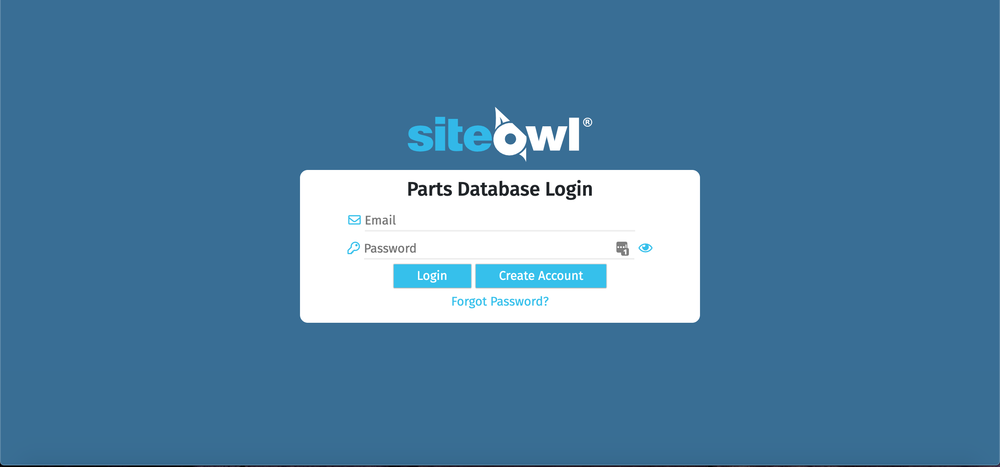
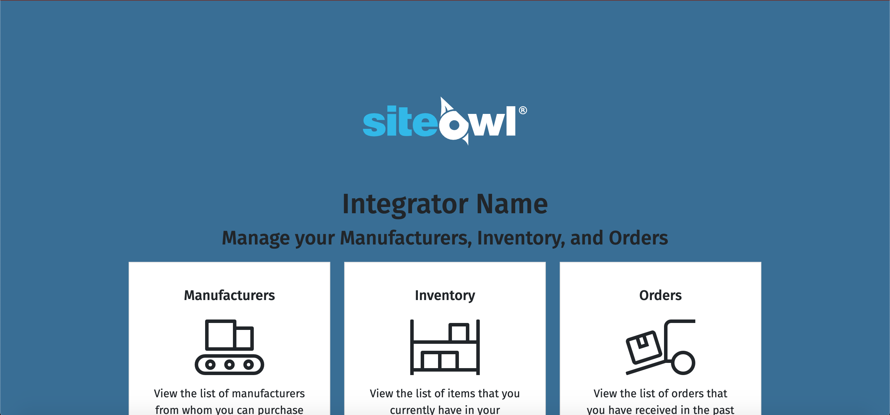
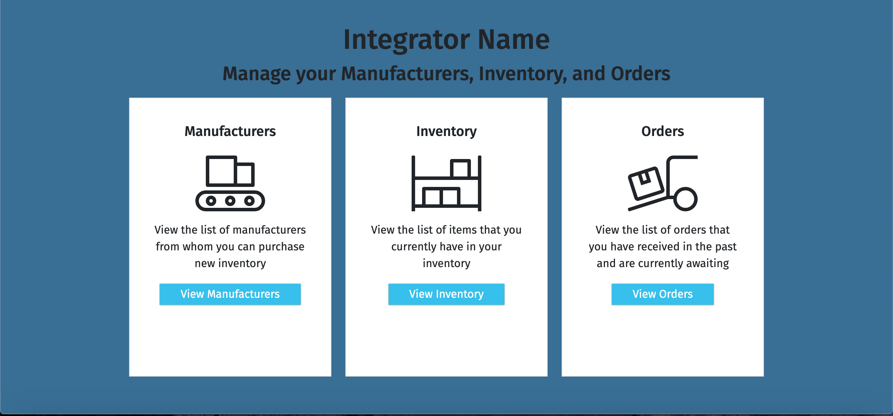
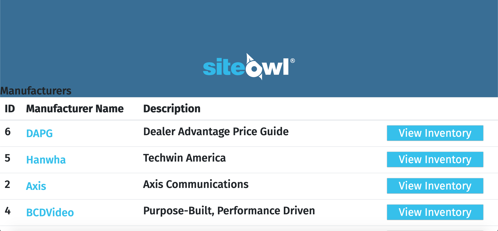
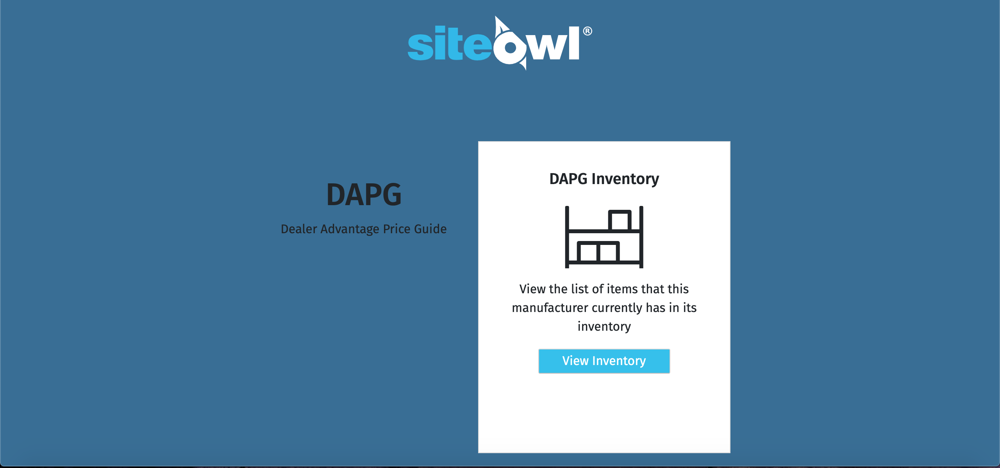

Projects
This Website
This website was coded using pure HTML and CSS and it is deployed through GitHub Pages. It serves as a portfolio for my work. I was the only person who worked on it.
SiteOwl Parts Database
This project was my Senior Capstone project. Out of the 6 people working on this project, I was the only Front-End Developer. I was in charge of taking designs that were given to me by the team's UI/UX Developer and turning them into code. We used Angular 8, HTML, CSS, Bootstrap, and Node for this project and it was temporarily deployed through AWS. Due to COVID-19 and time constraints, we weren't able to fully make our project public, though I've provided screenshots below of what I produced.
    Upcoming
Farkle Scorer
The next project that I am working on is a score keeper for the game Farkle. I play it a lot with my family and am tired of keeping score on paper. I plan to create it using React or another Javascript framework and HTML and CSS and use Heroku for deployment.